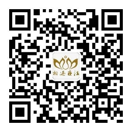

相遇疗法，是一颗心灵陪伴另外一颗心灵进行自我探索、自我觉悟、自我照亮内心的过程，然后烦恼之冰自然融化为智慧之水。
相遇疗法，是寿康学会徐冉会长结合对佛法、道家思想、中医心理学、王凤仪学说、马丁布伯哲学思想，罗杰斯来访者中心疗法、非暴力沟通等的体会，综合提炼而成的本土化心理疗法，是对传统文化的创造性转化和创新性发展。
特点：不用说隐私，不用讲道理，效果不衰减，易学易用。
应用范围：烦恼，心因性疾病，亲子教育，考试减压，矛盾调解，突破销售障碍等诸多方面。
要点：用第二人称【你】，来表达身心状态；第二，实事求是。
例1、当孩子被同学误解而感到生气时，和孩子一起用【你】表达那个生气，就会有良好效果。
例2、久治不愈的腰疼，对腰说【你】疼，【你】不想要这个疼等。
例3、考试时，如果学生很焦虑紧张，可以让学生表达【你】焦虑、【你】紧张等。
更多更深入的信息：相遇疗法QQ总群：155182377
关注相遇疗法微信公众平台：查找微信公众帐号“相遇疗法”
相遇疗法微信公众平台二维码：
